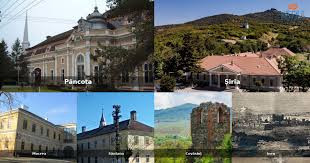
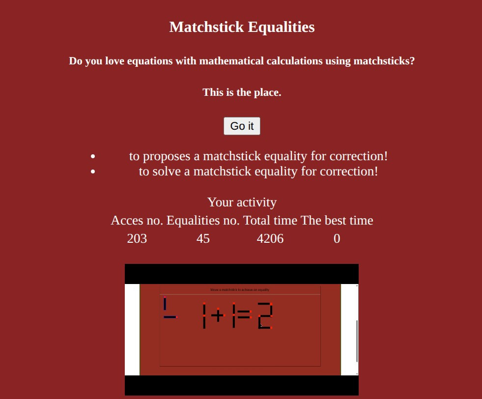
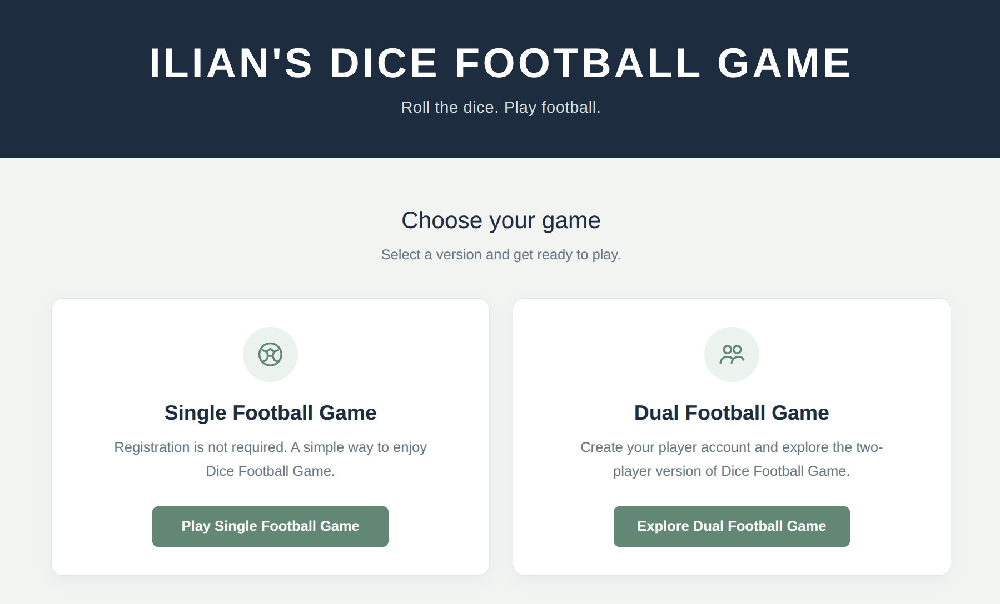
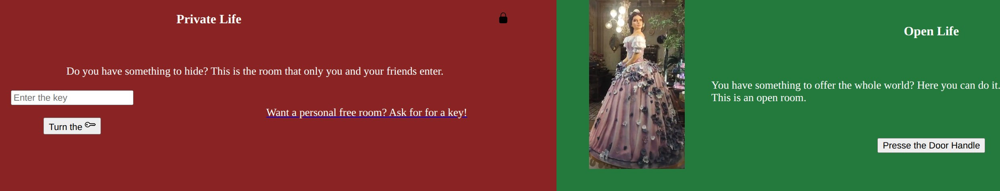
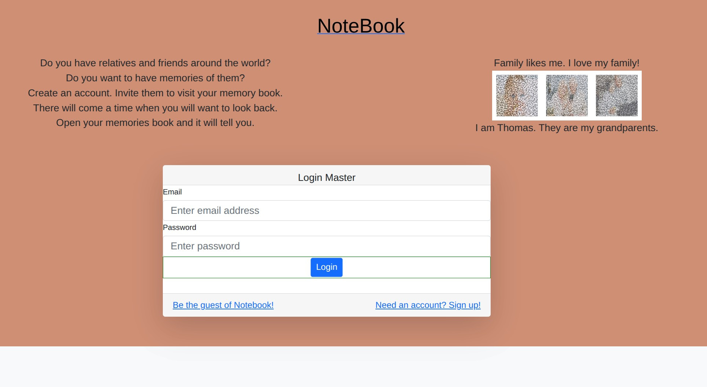
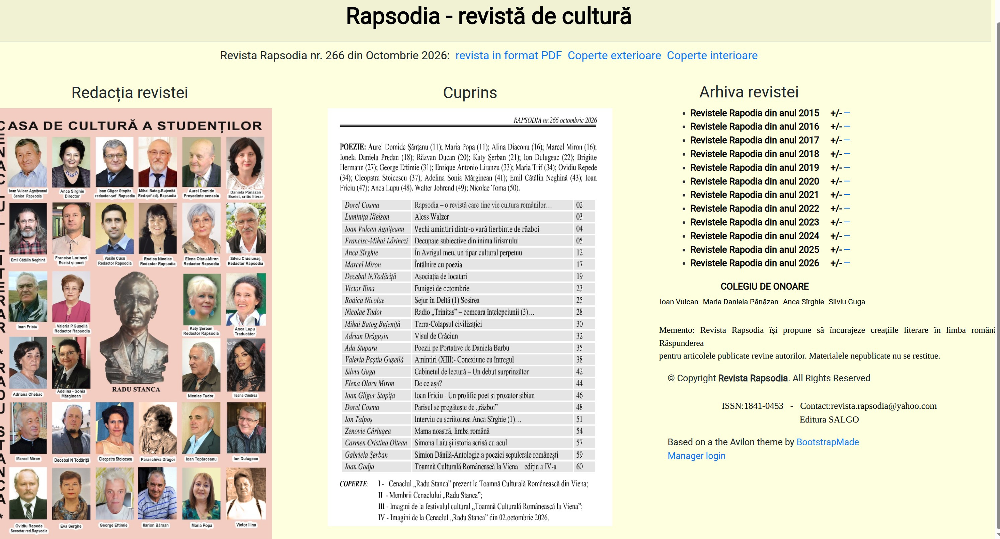
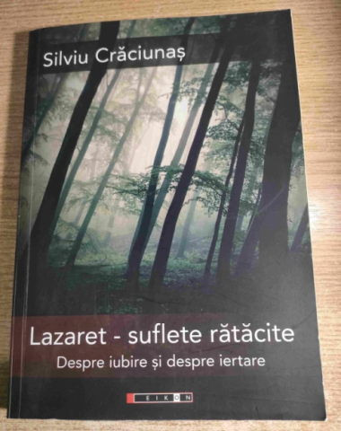

Silviu Craciunas
Silviu Craciunas
Silviu Craciunas
Silviu Craciunas

b. 24 october 1946, Șiria Village, Arad, Romania





2018-2024 Editor of W-Poesis magazine
W-Poesis is an independent, international, free-access literary journal. W-Poesis is an online magazine but it offers all the necessary elements to be printed. For printing, it is not necessary to obtain approvals. It’s like a desert where you can build your literary home. Because the acceptance rate for almost all literary journals is about 5%, we decide to open our house for quality work but without quantitative limitations. We are not interested in porn, racial slurs, excessive gore, or obscenity. We are dedicated to discovering and publishing the finest original poetry. We prefer expressive poems that give us a feeling and affect our soul. We accept submissions year-round. Happy reading and writing!Literary work: His literary work has been featured in numerous cultural and international magazines, including Indian Literature Review, Congruence, Everyday Poems, Panel Magazine, and Rapsodia. Crăciunaș's poetry deeply explores the profound emotional states of human beings in connection with nature and life.
